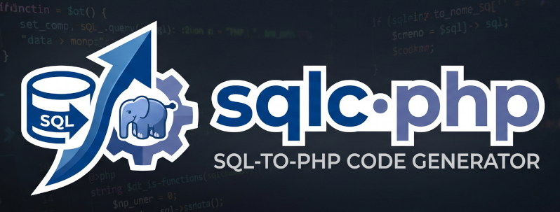

A PHP code generator inspired by sqlc. Write annotated SQL, get fully-typed PHP 8.4 classes using PDO — no ORM, no query builder, no magic.
How it works
sqlc-php reads your SQL schema and annotated query files, resolves column types, and generates a Model class (readonly, hydrated from PDO rows), a Query class (one method per query), and an optional Interface for dependency injection.
Requirements
| Requirement | Version |
|---|---|
| PHP | ≥ 8.3 |
| PDO extension | Enabled (default in most environments) |
| symfony/yaml | ^6.0 || ^7.0 || ^8.0 |
| doctrine/inflector | ^2.0 (optional — for pluralization) |
Installation
composer require phpibe/sqlc-phpThen create a sqlc.yaml config, annotate your queries, and run:
php vendor/bin/sqlc-php sqlc.yamlConfiguration — sqlc.yaml
All configuration lives in a single YAML file. Here is the full reference with every available option:
version: "2"
# ── Schema files ────────────────────────────────────────────────────────────
schema:
- database/schema/users.sql # one or more SQL files with CREATE TABLE
- database/schema/orders.sql
# ── Global defaults (can be overridden per target) ──────────────────────────
engine: mysql # database engine (mysql supported; postgres planned)
language: english # english | spanish | french | portuguese | etc.
class_suffix: Query # suffix for generated class names (default: Query)
# e.g. Repository → UserRepository, Service → UserService
# ── Global type overrides ───────────────────────────────────────────────────
type_overrides:
- db_type: "TINYINT"
php_type: "bool"
# ── Database connection for --generate-schema ───────────────────────────────
database:
dsn: "mysql:host=localhost;dbname=myapp;charset=utf8mb4"
username: "${DB_USER}" # ${ENV_VAR} expanded from environment at runtime
password: "${DB_PASS}"
exclude_tables: # skip these tables when extracting schema
- migrations
- failed_jobs
# include_tables: # whitelist — only extract these tables
# - users
# - orders
# ── Virtual tables (views, CTEs, external tables) ───────────────────────────
virtual_tables:
- name: user_summary
columns:
- { name: id, type: INT }
- { name: email, type: VARCHAR }
- { name: total, type: INT }
# ── Includes (split config across files) ────────────────────────────────────
includes:
- config/views.yaml
# ── Output targets ──────────────────────────────────────────────────────────
targets:
- namespace: "App\\Database"
out: generated # output directory
queries:
- database/queries/users.sql
- database/queries/orders.sql
generate_interfaces: true # generate *Interface.php (default: true)
prepared_statement_cache: false # cache PDOStatements in $this->stmts (default: false)
class_suffix: Query # per-target override of global class_suffix
engine: mysql # per-target engine override
language: english # per-target language override
type_overrides: # per-target overrides (merged with global)
- db_type: "DECIMAL"
php_type: "float"
database: # per-target DB override for --generate-schema
dsn: "mysql:host=db2;dbname=other"Configuration options reference
| Key | Level | Default | Description |
|---|---|---|---|
schema | global | — | SQL files with CREATE TABLE statements |
engine | global / target | mysql | Database engine for type mapping |
language | global / target | english | Language for pluralization (model class names) |
class_suffix | global / target | Query | Suffix appended to generated class names |
type_overrides | global / target | [] | Custom SQL → PHP type mappings |
database | global / target | null | Connection config for --generate-schema |
virtual_tables | global | [] | Tables not in schema files (views, CTEs) |
includes | global | [] | Split config across multiple YAML files |
targets[].namespace | target | — | PHP namespace base for generated files |
targets[].out | target | — | Output directory (string) or per-type map — see below |
targets[].queries | target | — | SQL files with annotated queries |
targets[].generate_interfaces | target | true | Generate *Interface.php files |
targets[].prepared_statement_cache | target | false | Cache PDOStatement objects across calls |
out: — string vs map form
By default out: is a string and all generated files share one directory and namespace. When out: is a YAML map, each file type gets its own directory — and its namespace is automatically derived from the last path segment appended to the target's base namespace.
String form — all types in one directory (backward-compatible default)
targets:
- namespace: "App\\Database"
out: generated # UserQuery.php, User.php, GetUserRow.php — all go here
queries: queries.sqlMap form — each type in its own directory
targets:
- namespace: "App\\Database"
queries: queries.sql
out:
queries: database/Repositories # → App\Database\Repositories\UserRepository.php
models: database/Models # → App\Database\Models\User.php
dtos: database/DTOs # → App\Database\DTOs\GetUserWithRoleRow.php
enums: database/Enums # → App\Database\Enums\OrderStatus.php
interfaces: database/Contracts # → App\Database\Contracts\UserRepositoryInterface.php
criterias: database/Criterias # → App\Database\Criterias\UserCriteria.php| Key | Contains |
|---|---|
queries | Query / Repository classes (UserRepository.php) |
models | Model classes (User.php) — readonly, generated from schema |
dtos | Result DTOs (GetUserWithRoleRow.php) and Embed DTOs from @embed |
enums | Backed enum classes generated from MySQL ENUM columns |
interfaces | Query interfaces (UserRepositoryInterface.php) |
criterias | Criteria classes generated by @searchable queries |
Namespace rule: namespace + '\' + last path segment. The prefix is filesystem-only and does not affect the namespace.
Automatic use statements: when types live in different namespaces, sqlc-php injects the necessary use statements into generated files automatically.
Error policy: if a query generates a file type that has no declared directory in the map, generation stops with a clear error before writing any files.
Partial maps: you only need to declare the types your project actually uses. If no query uses @searchable, you can omit out.criterias.
DDD / Laravel example
targets:
- namespace: "App\\Modules\\Billing"
queries: database/queries/billing.sql
class_suffix: Repository
out:
queries: app/Modules/Billing/Infrastructure # BillingConfigRepository.php
models: app/Modules/Billing/Domain # BillingConfig.php
dtos: app/Modules/Billing/Infrastructure/DTOs # ListBillingConfigRow.php
interfaces: app/Modules/Billing/Domain/Ports # BillingConfigRepositoryInterface.php
enums: app/Modules/Billing/Domain/Enums # OrderStatus.php
criterias: app/Modules/Billing/Infrastructure # BillingConfigCriteria.phptype_overrides
Override the default SQL → PHP type mapping. Applies globally or per-target.
type_overrides:
- db_type: "TINYINT"
php_type: "bool"
- db_type: "DECIMAL"
php_type: "float"
- db_type: "TIMESTAMP"
php_type: "\\DateTimeImmutable"
nullable: truePrecedence: target-level overrides → global overrides → built-in defaults.
SQL → PHP type mapping
| MySQL type | PHP type | fromRow cast |
|---|---|---|
INT, BIGINT, SMALLINT, TINYINT | int | (int) |
FLOAT, DOUBLE, DECIMAL, NUMERIC | float | (float) |
VARCHAR, CHAR, TEXT, LONGTEXT | string | — |
DATE, DATETIME, TIMESTAMP | \DateTimeImmutable | new \DateTimeImmutable() |
JSON | array | json_decode(, true) |
ENUM('a','b') | EnumClass | EnumClass::from() |
NULL columns | ?type | null check before cast |
--generate-schema
Connects to a live database and generates schema.sql automatically. No need to write or maintain CREATE TABLE statements by hand.
# Write to the first schema: path in sqlc.yaml
php vendor/bin/sqlc-php --generate-schema sqlc.yaml
# Write to a custom path
php vendor/bin/sqlc-php --generate-schema --schema-output=database/schema.sql sqlc.yamlWorkflow
# 1. Extract schema from live DB
php vendor/bin/sqlc-php --generate-schema sqlc.yaml
# 2. Generate PHP classes
php vendor/bin/sqlc-php sqlc.yamldatabase: block
database:
dsn: "mysql:host=localhost;dbname=myapp;charset=utf8mb4"
username: "${DB_USER}" # expanded from environment at runtime
password: "${DB_PASS}"
exclude_tables:
- migrations
- failed_jobs
- sessions
# include_tables: # whitelist — only extract these tables
# - users
# - ordersSecurity — credentials in environment
# sqlc.yaml (safe to commit)
database:
dsn: "mysql:host=${DB_HOST};dbname=${DB_NAME};charset=utf8mb4"
username: "${DB_USER}"
password: "${DB_PASS}"# .env.local (add to .gitignore)
DB_HOST=localhost
DB_NAME=myapp
DB_USER=root
DB_PASS=secret
source .env.local && php vendor/bin/sqlc-php --generate-schema sqlc.yamlSHOW TABLES + SHOW CREATE TABLE. AUTO_INCREMENT=N is stripped from the output to avoid noisy git diffs.
Annotations reference
Annotations appear as SQL comments (-- @annotation value) immediately before the query. Every query requires at minimum @name and @returns.
| Annotation | Required | Description |
|---|---|---|
| @name | Yes | PHP method name (camelCase) |
| @returns | Yes | Return type — see Return Types section |
| @class | No | Group name → generated class prefix (e.g. User → UserQuery). Inferred from table name when absent. |
| @group | No | Deprecated — use @class instead. Still works, emits a warning. |
| @optional | No | Make a WHERE param skippable when null |
| @dto | No | Override the auto-generated result DTO class name |
| @column | No | Rename a result column without SQL AS |
| @embed | No | Group prefixed columns into a nested readonly object |
| @nillable | No | Force a result column to ?type |
| @counted | No | Generate a companion {name}Count(): int method (only with :many-paginated) |
| @searchable | No | Generate a typed Criteria class for dynamic WHERE/ORDER BY (only with :many / :many-paginated) |
| @deprecated | No | Emit @deprecated in the method docblock |
| @param | No | Explicit type for a named parameter |
| @calls | No | Methods to call in sequence (used with :transaction) |
| @partial | No | Mark SET params in an UPDATE as optional — passing null leaves the column unchanged. Only valid on :exec UPDATE queries. |
@name
Sets the PHP method name. The name is used as-is — use camelCase by convention.
-- @name GetUserById
-- @returns :one
SELECT * FROM users WHERE id = :id;Generates: public function getUserById(int $id): User
@class / @group
@class sets the group name that determines which Query class the method is placed in. Multiple queries with the same @class are combined into one file. When omitted, the group is inferred from the FROM table name.
-- @name ListActive
-- @class User ← all queries with @class User → UserQuery.php
-- @returns :many
SELECT * FROM users WHERE active = 1;
-- @name CountByCountry
-- @class User ← same class → same file
-- @returns :one
SELECT country_id, COUNT(*) AS total FROM users GROUP BY country_id;Combined with class_suffix: Repository in sqlc.yaml, @class User generates UserRepository.
@group is the deprecated predecessor of @class. It still works but emits a warning to stderr: "@group is deprecated, use @class instead".
@returns
Declares the return type of the generated method. See the Return Types section for full details on each type.
-- @returns :many → array of rows
-- @returns :many-paginated → array of rows with optional LIMIT/OFFSET
-- @returns :one → single row (throws if not found)
-- @returns :opt → single row or null
-- @returns :exec → void (INSERT / UPDATE / DELETE)
-- @returns :batch → int (same query N times in a transaction)
-- @returns :transaction → void (calls multiple methods in one transaction)@optional
Makes a WHERE parameter optional. When the caller passes null, the condition is skipped entirely — no PHP-side if required. The SQL is rewritten at compile time using the pattern (:param_chk IS NULL OR col OP :param) which is PDO-safe.
-- @name ListUsers
-- @optional active ← :active becomes ?int $active = null
-- @optional country_id ← multiple @optional allowed
-- @returns :many
SELECT * FROM users
WHERE active = :active
AND country_id = :country_id;// All users (both filters skipped)
$query->listUsers();
// Only active users
$query->listUsers(active: 1);
// Active users in country 164
$query->listUsers(active: 1, country_id: 164);@optional is safe to use with JOINs as long as the optional param is in the WHERE clause, not in an ON condition. Params in ON clauses will produce an error at generation time.
Supported operators
= != <> > < >= <= LIKE ILIKE
@dto / @column
@dto overrides the auto-generated result DTO class name. Useful when you want to reuse the same DTO across multiple queries, or when the default name is unwieldy.
-- @name ListBillingConfig
-- @class BillingConfig
-- @dto BillingConfigRow ← generated DTO class: BillingConfigRow.php
-- @returns :many
SELECT
bc.id,
bc.active,
c.name AS country_name
FROM billing_config bc
JOIN countries c ON c.id = bc.country_id;@column renames a result column in the generated DTO without adding an AS clause to the SQL:
-- @name GetUser
-- @column u_email email ← renames u_email → email in the DTO
-- @returns :one
SELECT id, email AS u_email FROM users WHERE id = :id;@embed
Groups prefixed columns from a JOIN into a nested readonly object instead of flat properties.
-- @name GetUserWithRole
-- @embed Role role__ ← columns prefixed "role__" → Role object
-- @returns :one
SELECT
u.id,
u.email,
r.name AS role__name,
r.slug AS role__slug
FROM users u
JOIN roles r ON r.id = u.role_id
WHERE u.id = :id;// Generated: GetUserWithRoleRow.php
readonly class GetUserWithRoleRow {
public function __construct(
public int $id,
public string $email,
public Role $role, // ← nested object
) {}
}
// Generated: Role.php (standalone value object)
readonly class Role {
public function __construct(
public string $name,
public string $slug,
) {}
}role_, role__, country___ — all are preserved exactly. Use a consistent prefix in both the annotation and the SQL aliases.
@nillable
Forces a result column to be ?type (nullable) in the generated DTO, even if the schema defines it as NOT NULL. Useful for LEFT JOIN columns that may be NULL at runtime.
-- @name GetUserWithOrder
-- @nillable order_id ← force nullable even though orders.id is NOT NULL
-- @nillable order_total
-- @returns :opt
SELECT
u.id,
u.email,
o.id AS order_id,
o.total AS order_total
FROM users u
LEFT JOIN orders o ON o.user_id = u.id
WHERE u.id = :id;Result: public ?int $orderId and public ?float $orderTotal in the DTO.
@counted
Generates a companion {name}Count(): int method alongside a :many-paginated method. The count method wraps the original SQL in SELECT COUNT(*) FROM (...) AS _count_subquery and is essential for building paginators.
Only valid with :many-paginated.
-- @name ListUsers
-- @counted ← generate listUsersCount() alongside listUsers()
-- @returns :many-paginated
SELECT id, email, active FROM users WHERE active = :active;// Generated methods:
// Main paginated method
public function listUsers(int $active, ?int $limit = null, int $offset = 0): array
// Companion count method — same filters, no limit/offset
public function listUsersCount(int $active): int// Usage
$total = $query->listUsersCount(active: 1);
$page = $query->listUsers(active: 1, limit: 20, offset: 0);
$perPage = 20;
$pages = (int) ceil($total / $perPage);@searchable
Generates a typed {Group}Criteria class and adds it as a parameter to the query method. Enables dynamic WHERE conditions and ORDER BY at runtime — without writing separate queries per filter combination. Only valid with :many and :many-paginated.
-- @name ListBillingConfig
-- @class BillingConfig
-- @searchable
-- @counted
-- @returns :many-paginated
SELECT id, active, country_id, end_num, expiration_date
FROM billing_config;Generates BillingConfigCriteria.php with one typed method per column per applicable operator:
// Generated: BillingConfigCriteria.php
class BillingConfigCriteria extends \SqlcPhp\Criteria\Criteria
{
// INT columns → Eq, Neq, Gt, Lt, Gte, Lte, In (variadic), NotIn (variadic)
public function whereActiveEq(int $value): static
public function whereActiveIn(int ...$values): static // whereActiveIn(1, 2, 3)
public function whereActiveNotIn(int ...$values): static
public function whereCountryIdIn(int ...$values): static
// Nullable columns → also IsNull, IsNotNull
public function whereEndNumIsNull(): static
public function whereEndNumIsNotNull(): static
// DATE / DATETIME columns → also Between
public function whereExpirationDateBetween(\DateTimeImmutable $from, \DateTimeImmutable $to): static
// VARCHAR / TEXT → also Like, StartsWith, EndsWith
// (none here since no string columns in this query)
// Every column → orderBy method
public function orderByActive(string $direction = 'ASC'): static
public function orderByExpirationDate(string $direction = 'ASC'): static
}// Generated method signatures
public function listBillingConfig(
?BillingConfigCriteria $criteria = null,
?int $limit = null,
int $offset = 0,
): array
public function listBillingConfigCount(
?BillingConfigCriteria $criteria = null,
): int// Usage
$criteria = (new BillingConfigCriteria())
->whereActiveEq(1)
->whereCountryIdIn(164, 165)
->orderByExpirationDate('DESC');
$page = $query->listBillingConfig($criteria, limit: 20, offset: 0);
$total = $query->listBillingConfigCount($criteria);
// No criteria — returns all rows
$all = $query->listBillingConfig();Generated filter methods by type
| SQL type | Generated methods |
|---|---|
INT / TINYINT | Eq, Neq, Gt, Lt, Gte, Lte, In, NotIn — + IsNull/IsNotNull if nullable |
VARCHAR / TEXT | Eq, Neq, Like, StartsWith, EndsWith, In, NotIn — + IsNull/IsNotNull if nullable |
DECIMAL / FLOAT | Eq, Neq, Gt, Lt, Gte, Lte — + IsNull/IsNotNull if nullable |
DATE / DATETIME | Eq, Neq, Gt, Lt, Gte, Lte, Between — + IsNull/IsNotNull if nullable |
TINYINT (bool) | Eq only |
| All types | orderBy{Column}(string $direction = 'ASC') |
ALLOWED_COLUMNS) to prevent SQL injection. IN/NOT_IN values expand to individual PDO placeholders. All filters are combined with AND — OR logic is not supported in v2.7.0.
@deprecated
Emits a @deprecated tag in the generated method docblock. IDEs and static analysis tools will warn callers.
-- @name GetUserLegacy
-- @deprecated Use getUserById instead
-- @returns :opt
SELECT * FROM users WHERE legacy_id = :legacy_id;/** @deprecated Use getUserById instead */
public function getUserLegacy(string $legacy_id): ?User@calls
Used with :transaction to declare which methods are called in sequence inside a single database transaction. See the :transaction return type for a full example.
-- @name TransferFunds
-- @calls debitAccount,creditAccount
-- @returns :transaction
-- (no SQL body — the transaction orchestrates other methods)@partial — optional UPDATE fields (PATCH pattern)
Marks an UPDATE query as a partial update. Any parameter that appears inside a COALESCE(:param, column) expression in the SET clause becomes optional (?type $param = null) in the generated method. When null is passed, the column is left unchanged — no PHP-side conditionals required.
Parameters in the WHERE clause remain required. Only valid on :exec UPDATE queries.
-- @name PatchUser
-- @partial
-- @returns :exec
UPDATE users SET
email = COALESCE(:email, email),
name = COALESCE(:name, name),
active = COALESCE(:active, active)
WHERE id = :id;// Generated method — required params first, optional params last
public function patchUser(
int $id, // WHERE param — required
?string $email = null, // SET param — optional
?string $name = null, // SET param — optional
?int $active = null, // SET param — optional
): void// Update only the email — name and active are left unchanged
$query->patchUser(id: 1, email: 'new@example.com');
// Update only active status
$query->patchUser(id: 1, active: 0);
// Update multiple fields at once
$query->patchUser(id: 1, email: 'new@example.com', name: 'Alice', active: 1);
// WHERE params can also be composite
// UPDATE users SET name = COALESCE(:name, name) WHERE id = :id AND tenant_id = :tenant_id
$query->patchUser(id: 1, tenant_id: 42, name: 'Bob');How it works
@partial does not rewrite the SQL. The COALESCE is written by you and is the source of truth: when PDO binds null to :email, COALESCE(NULL, email) evaluates to the existing column value — effectively a no-op for that field. The generator detects which params appear inside COALESCE(:param, ...) in the SET region and marks them optional.
Comparison with @optional
| Feature | @optional | @partial |
|---|---|---|
| Works in | WHERE clause | SET clause |
| SQL rewriting | Yes — rewrites col = :p to (:p_chk IS NULL OR col = :p) | No — you write the COALESCE yourself |
| Use case | Skip a filter when null (SELECT/UPDATE WHERE) | Skip a SET field when null (UPDATE PATCH) |
| Valid on | :many, :many-paginated, :exec | :exec UPDATE only |
| Can combine | Yes — @partial + @optional on same query | Yes |
@partial and @optional can be combined. Use @partial for optional SET fields and @optional for an optional WHERE filter on the same UPDATE query.
-- @name PatchActiveUsers
-- @partial
-- @optional country_id ← optional WHERE filter (rewritten by SqlRewriter)
-- @returns :exec
UPDATE users SET
name = COALESCE(:name, name)
WHERE active = 1 AND country_id = :country_id;// Filter by country (optional) and update name (optional)
public function patchActiveUsers(
?int $country_id = null, // WHERE — optional
?string $name = null, // SET — optional
): voidReturn types reference
| Type | PHP return | Behaviour |
|---|---|---|
| :many | ModelClass[] | Array of rows — empty array if no rows |
| :many-paginated | ModelClass[] | Array with optional ?int $limit / int $offset. null limit returns all rows. |
| :one | ModelClass | Single row — throws RuntimeException if not found |
| :opt | ModelClass|null | Single row — returns null if not found |
| :exec | void | INSERT / UPDATE / DELETE — no return value |
| :batch | int | Same query run N times in a transaction — returns total rows affected |
| :transaction | void | Calls multiple @calls methods inside one transaction |
:many
Returns all matching rows as an array. Returns an empty array when no rows match — never throws.
-- @name ListActiveUsers
-- @returns :many
SELECT * FROM users WHERE active = 1;/** @return User[] */
public function listActiveUsers(): arrayWhen the SELECT includes columns from multiple tables (JOIN), sqlc-php generates a result DTO (ListActiveUsersRow) instead of the model class.
:many-paginated
Like :many but adds ?int $limit = null and int $offset = 0 parameters. When $limit is null (the default), all rows are returned — no LIMIT clause is applied. Two prepared statements are generated internally (one with, one without LIMIT).
-- @name ListUsers
-- @returns :many-paginated
SELECT * FROM users ORDER BY created_at DESC;/** @return User[] */
public function listUsers(?int $limit = null, int $offset = 0): array$all = $query->listUsers(); // all rows
$page1 = $query->listUsers(20); // first 20
$page2 = $query->listUsers(20, 20); // rows 21-40Combine with @counted to get the total for pagination UI. Combine with @searchable for dynamic filters.
:one
Returns a single row. Throws RuntimeException if the query returns no rows. Use when the row is guaranteed to exist (e.g., lookup by primary key with a foreign key constraint).
-- @name GetUser
-- @returns :one
SELECT * FROM users WHERE id = :id;public function getUser(int $id): User // throws if not found:opt
Returns a single row or null. Use when the row may not exist.
-- @name FindUserByEmail
-- @returns :opt
SELECT * FROM users WHERE email = :email;public function findUserByEmail(string $email): ?User:exec
For INSERT, UPDATE, DELETE. Returns void.
-- @name CreateUser
-- @returns :exec
INSERT INTO users (email, active) VALUES (:email, :active);
-- @name DeleteUser
-- @returns :exec
DELETE FROM users WHERE id = :id;
-- @name UpdateActive
-- @returns :exec
UPDATE users SET active = :active WHERE id = :id;public function createUser(string $email, int $active): void
public function deleteUser(int $id): void
public function updateActive(int $active, int $id): void:batch
Executes the same query once per row in an array, inside a single transaction. Returns the total number of rows affected. Rolls back automatically on failure.
-- @name InsertUsers
-- @returns :batch
INSERT INTO users (email, active) VALUES (:email, :active);/** @param array $rows */
public function insertUsers(array $rows): int $count = $query->insertUsers([
['email' => 'a@example.com', 'active' => 1],
['email' => 'b@example.com', 'active' => 1],
]);:transaction
Calls multiple existing :exec methods of the same Query class inside one database transaction. Requires @calls and @class.
-- @name DebitAccount
-- @class Transfer
-- @returns :exec
UPDATE accounts SET balance = balance - :amount WHERE id = :account_id;
-- @name CreditAccount
-- @class Transfer
-- @returns :exec
UPDATE accounts SET balance = balance + :amount WHERE id = :account_id;
-- @name TransferFunds
-- @class Transfer
-- @calls debitAccount,creditAccount
-- @returns :transactionpublic function transferFunds(int $amount, int $account_id): void
{
$this->pdo->beginTransaction();
try {
$this->debitAccount($amount, $account_id);
$this->creditAccount($amount, $account_id);
$this->pdo->commit();
} catch (\Throwable $e) {
$this->pdo->rollBack();
throw $e;
}
}CLI reference
php vendor/bin/sqlc-php [options] [config]| Flag | Description |
|---|---|
-h, --help | Show help message and exit |
-v, --version | Print version and exit |
(no flag) |
Generate PHP files from schema + queries. Config defaults to sqlc.yaml. |
--dry-run |
Print generated code to stdout. Nothing is written to disk. |
--diff |
Show a unified diff of what would change. Nothing is written. Exits 1 if there are changes. |
--verify |
Exit 1 if any generated file is out of date — without writing anything. Ideal for CI pipelines. |
--watch |
Watch schema and query files for changes and regenerate automatically. Press Ctrl+C to stop. |
--interval=N |
Polling interval for --watch in milliseconds. Default: 500. Minimum: 100. |
--generate-schema |
Connect to the database: configured in sqlc.yaml and extract the schema. Writes to the first schema: file. |
--schema-output=PATH |
Override the output path for --generate-schema. |
Examples
php vendor/bin/sqlc-php sqlc.yaml
php vendor/bin/sqlc-php --verify sqlc.yaml
php vendor/bin/sqlc-php --dry-run sqlc.yaml
php vendor/bin/sqlc-php --diff sqlc.yaml
php vendor/bin/sqlc-php --watch sqlc.yaml
php vendor/bin/sqlc-php --watch --interval=250 sqlc.yaml
php vendor/bin/sqlc-php --generate-schema sqlc.yaml
php vendor/bin/sqlc-php --generate-schema --schema-output=db/schema.sql sqlc.yaml
php vendor/bin/sqlc-php --versionPattern: Basic SELECT
SELECT * — returns the model class
When the query selects all columns from a single table, sqlc-php returns the generated model class directly.
-- @name ListUsers
-- @returns :many
SELECT * FROM users;
-- @name GetUser
-- @returns :one
SELECT * FROM users WHERE id = :id;
-- @name FindByEmail
-- @returns :opt
SELECT * FROM users WHERE email = :email;SELECT specific columns — generates a result DTO
When the query selects a subset of columns (or columns from multiple tables), a result DTO is generated automatically.
-- @name ListUserSummary
-- @returns :many
SELECT id, email, active FROM users;Generates ListUserSummaryRow.php with exactly those three properties. Use @dto to rename it.
Pattern: JOINs & DTOs
-- @name GetUserWithRole
-- @dto UserWithRole
-- @embed Role role__
-- @returns :one
SELECT
u.id,
u.email,
r.name AS role__name,
r.slug AS role__slug
FROM users u
JOIN roles r ON r.id = u.role_id
WHERE u.id = :id;// Generated: UserWithRole.php
readonly class UserWithRole {
public function __construct(
public int $id,
public string $email,
public Role $role, // ← nested via @embed
) {}
}
// Generated: Role.php
readonly class Role {
public function __construct(
public string $name,
public string $slug,
) {}
}Pattern: Aggregates and IF()
sqlc-php infers types from SQL expressions. Numeric literals (0, 42) resolve to int. Arithmetic expressions (col - MAX(col)) resolve from the left operand. IF(cond, true_val, false_val) resolves from the true branch.
-- @name ListBillingConfig
-- @class BillingConfig
-- @returns :many
SELECT
bc.id,
bc.end_num,
MAX(m.voucher_number) AS max_voucher,
IF(MAX(m.voucher_number) >= bc.end_num, 0,
bc.end_num - MAX(m.voucher_number)) AS remaining
FROM billing_config bc
LEFT JOIN memory m ON m.voucher_type = CASE
WHEN bc.country_id = 164 THEN 'factExp' ELSE 'factTicket' END
GROUP BY bc.id;Result: int $remaining (not string) because 0 is a numeric literal and bc.end_num - MAX(...) resolves from bc.end_num which is INT.
Expression type inference
| Expression | Resolved as |
|---|---|
COUNT(*), COUNT(col) | int |
MAX(col), MIN(col) | ?type of col |
SUM(col), AVG(col) | ?float |
LENGTH(), CHAR_LENGTH() | int |
CONCAT(), UPPER(), LOWER() | ?string |
COALESCE(col, default) | type of col (non-nullable) |
IFNULL(col, default) | type of col (non-nullable) |
NULLIF(a, b) | ?type of a |
IF(cond, val, other) | type of val (or other if val is NULL) |
0, 42 (integer literal) | int |
3.14 (float literal) | float |
col - MAX(col) (arithmetic) | type of left operand |
CAST(col AS SIGNED) | int |
CAST(col AS CHAR) | string |
NOW(), CURDATE() | \DateTimeImmutable |
Pattern: IN() clauses
Use a single named placeholder for an IN() clause. sqlc-php expands it to individual placeholders at runtime.
-- @name GetUsersByIds
-- @returns :many
SELECT * FROM users WHERE id IN (:ids);/** @param int[] $ids */
public function getUsersByIds(array $ids): array$users = $query->getUsersByIds([1, 2, 3, 4]);IN() method throws InvalidArgumentException. Always validate before calling.
Pattern: MySQL ENUM → PHP backed enum
MySQL ENUM columns are automatically mapped to PHP 8.1+ backed enums.
-- schema.sql
CREATE TABLE orders (
id INT AUTO_INCREMENT PRIMARY KEY,
status ENUM('pending', 'paid', 'cancelled') NOT NULL DEFAULT 'pending'
);// Generated: OrderStatus.php
enum OrderStatus: string {
case Pending = 'pending';
case Paid = 'paid';
case Cancelled = 'cancelled';
}
// In Order.php model:
public OrderStatus $statusPattern: JSON columns
CREATE TABLE products (
id INT PRIMARY KEY,
metadata JSON NULL
);// Generated model property
public ?array $metadata // automatically json_decode()'d in fromRow()Generated file structure
Model class example (User.php)
// Generated — do not edit manually
readonly class User
{
public function __construct(
public int $id,
public string $email,
public int $active,
public ?string $name,
public \DateTimeImmutable $createdAt,
) {}
public static function fromRow(array $row): self
{
return new self(
id: (int) $row['id'],
email: $row['email'],
active: (int) $row['active'],
name: $row['name'] ?? null,
createdAt: new \DateTimeImmutable($row['created_at']),
);
}
}Query class example (UserQuery.php)
// Generated — do not edit manually
class UserQuery implements UserQueryInterface
{
public function __construct(private readonly PDO $pdo) {}
/** @return User[] */
public function listActiveUsers(): array
{
$stmt = $this->pdo->prepare('SELECT * FROM users WHERE active = 1');
$stmt->execute();
return array_map(
static fn(array $row): User => User::fromRow($row),
$stmt->fetchAll(PDO::FETCH_ASSOC),
);
}
public function getUser(int $id): User
{
$stmt = $this->pdo->prepare('SELECT * FROM users WHERE id = :id');
$stmt->bindValue(':id', $id, PDO::PARAM_INT);
$stmt->execute();
$row = $stmt->fetch(PDO::FETCH_ASSOC);
if ($row === false) {
throw new RuntimeException("getUser: no row found for id={$id}");
}
return User::fromRow($row);
}
}Interface example (UserQueryInterface.php)
// Generated — do not edit manually
interface UserQueryInterface
{
/** @return User[] */
public function listActiveUsers(): array;
public function getUser(int $id): User;
public function findByEmail(string $email): ?User;
}Basic usage
$pdo = new PDO('mysql:host=localhost;dbname=myapp', 'user', 'pass', [
PDO::ATTR_ERRMODE => PDO::ERRMODE_EXCEPTION,
PDO::ATTR_DEFAULT_FETCH_MODE => PDO::FETCH_ASSOC,
]);
$userQuery = new UserQuery($pdo);
$users = $userQuery->listActiveUsers();
$user = $userQuery->getUser(1);
$found = $userQuery->findByEmail('hello@example.com');lastQuery(), logger & afterQuery hook
Every generated Query class exposes three optional features for observability: a lastQuery() accessor that records the last executed SQL, a PSR-3 logger for automatic query logging, and an $afterQuery callable hook for custom integrations like Laravel Debugbar.
Constructor signature
public function __construct(
PDO $pdo,
?LoggerInterface $logger = null, // PSR-3 — Telescope, files, etc.
?Closure $afterQuery = null, // custom hook — Debugbar, metrics, etc.
)All three parameters after $pdo are optional and default to null. Existing code that constructs new UserRepository($pdo) continues to work without any changes.
lastQuery() — post-execution inspection
$users = $repo->listActiveUsers(active: 1);
$q = $repo->lastQuery();
echo $q->toString(); // SQL with placeholders — safe to log
echo $q->toDebugSql(); // SQL with values interpolated — debug only
$q->bindings(); // [':active' => [1, PDO::PARAM_INT], ...]
$q->values(); // [':active' => 1]
$q->queryName; // 'listActiveUsers'
$q->cacheKey(); // stable md5 for cachingPSR-3 logger — automatic query logging
When a PSR-3 logger is provided, every executed method calls $logger->debug() with the SQL as the message and the bound values as the context array. Works with any PSR-3 implementation: Monolog, Laravel Log, Symfony Logger, etc.
// Any PSR-3 logger
$repo = new UserRepository(
pdo: $pdo,
logger: $logger, // Monolog, Laravel's Log facade, etc.
);
// After $repo->listActiveUsers(active: 1), the logger receives:
// message: "listActiveUsers: SELECT * FROM users WHERE active = :active"
// context: [':active' => 1]app(Psr\Log\LoggerInterface::class) resolves to the application logger automatically. Queries logged at debug level will appear in Laravel Telescope under the Logs tab.
afterQuery hook — custom integrations
The $afterQuery callable receives the QueryObject after every execution. Use it to integrate with tools that don't support PSR-3 — like Laravel Debugbar, OpenTelemetry spans, custom metrics, or application-level query tracing.
// Laravel Debugbar integration
$repo = new UserRepository(
pdo: $pdo,
afterQuery: function (QueryObject $q): void {
\Debugbar::addMessage(
$q->queryName . ': ' . $q->toString(),
'queries',
);
},
);// Both logger and hook together
$repo = new UserRepository(
pdo: $pdo,
logger: app(LoggerInterface::class), // PSR-3 → Telescope
afterQuery: fn(QueryObject $q) =>
\Debugbar::addMessage($q->toString(), 'queries'), // Debugbar
);// OpenTelemetry / custom metrics
$repo = new UserRepository(
pdo: $pdo,
afterQuery: function (QueryObject $q): void {
$this->metrics->increment('db.queries.count', tags: ['query' => $q->queryName]);
$this->tracer->addEvent('db.query', ['sql' => $q->toString()]);
},
);// Collect all queries executed during a request (for profiling)
$queries = [];
$repo = new UserRepository(
pdo: $pdo,
afterQuery: function (QueryObject $q) use (&$queries): void {
$queries[] = ['name' => $q->queryName, 'sql' => $q->toString()];
},
);Testing SQL without a database
$pdo = $this->createMock(PDO::class);
$stmt = $this->createMock(PDOStatement::class);
$stmt->method('fetchAll')->willReturn([]);
$pdo->method('prepare')->willReturn($stmt);
$repo = new UserRepository($pdo);
$users = $repo->listActiveUsers(active: 1);
$this->assertStringContainsString('WHERE', $repo->lastQuery()->toString());
$this->assertSame(1, $repo->lastQuery()->values()[':active']);QueryObject API reference
| Method / Property | Returns | Description |
|---|---|---|
toString() | string | SQL with named PDO placeholders — safe to log |
(string) $q | string | Same as toString() via __toString |
toDebugSql() | string | SQL with values interpolated — debugging only, never execute |
bindings() | array | All bound parameters with PDO type constants |
values() | array | Bound values without PDO type constants — use as log context |
cacheKey() | string | Stable md5 key — unique per SQL + values combination |
paramCount() | int | Number of bound parameters |
$q->queryName | string | Name of the method that produced this query |
$q->isBatch | bool | true for :batch queries |
$q->batchCount | int | Rows processed (batch only) |
toDebugSql() to PDO. Values are interpolated without proper escaping — it is for logging and debugging only.
lastQuery(), $logger, and $afterQuery are not in the generated *Interface.php — they are infrastructure details, not domain contracts. Mocks implementing the interface do not need to implement them.
Laravel integration
1. Bind in a Service Provider
// app/Providers/AppServiceProvider.php
use App\Database\UserQueryInterface;
use App\Database\UserQuery;
public function register(): void
{
$this->app->bind(UserQueryInterface::class, function ($app) {
return new UserQuery($app['db']->getPdo());
});
}2. Inject into a controller
class UserController extends Controller
{
public function __construct(
private readonly UserQueryInterface $userQuery,
) {}
public function index(): JsonResponse
{
return response()->json($this->userQuery->listActiveUsers());
}
}3. Testing with the interface
$this->app->bind(UserQueryInterface::class, fn() => new class implements UserQueryInterface {
public function listActiveUsers(): array { return []; }
public function getUser(int $id): User { throw new RuntimeException('not found'); }
// ...
});Running the test suite
# PHPUnit test suite (868 tests)
./vendor/bin/phpunitSource structure
Changelog
- Constructor updated — every generated Query class now accepts two optional parameters:
?LoggerInterface $logger = nulland?Closure $afterQuery = null. Fully backward compatible — existingnew UserRepository($pdo)calls work unchanged. - PSR-3 logger — when provided, every executed method calls
$logger->debug(queryName + SQL, values). Works with Monolog, Laravel Log, Symfony Logger, and any PSR-3 implementation. Queries appear in Laravel Telescope under the Logs tab. - afterQuery hook — a
Closurecalled after every query with theQueryObjectas its argument. Use for Laravel Debugbar (Debugbar::addMessage), OpenTelemetry spans, custom metrics, or per-request query collection. psr/log: ^1.0 || ^2.0 || ^3.0added as a composer dependency.- 22 new tests in
tests/LoggerHookTest.php.
lastQuery(): ?QueryObject— every generated Query class now records the SQL and bound parameters of the most recently executed method. Call immediately after any query method to inspect what was sent to the database.QueryObject— new immutable value object inSqlcPhp\Query\QueryObject. Methods:toString()(safe SQL),toDebugSql()(interpolated, debug-only),bindings(),values(),cacheKey(),paramCount().- Criteria::getBindings() — new method exposing filter bindings as an array;
bindAll()now delegates to it. Enables@searchablemethods to correctly populatelastQuerywith dynamic criteria bindings. - Not in interface —
lastQuery()is an infrastructure detail and is deliberately excluded from generated*Interface.phpfiles. - 43 new tests in
tests/LastQueryTest.php.
out:now accepts a YAML map — each file type (queries,models,dtos,enums,interfaces,criterias) can have its own output directory and automatically derived namespace.- Namespace derivation —
namespace + '\' + last path segment. No extra config required. - Automatic
usestatements — when types live in different namespaces, the necessaryuseimports are injected into generated files automatically. - Backward compatible —
out: generated(string form) continues to work exactly as before. - Error on missing type — if a file type is needed but not declared in the map, generation stops with a clear error message before writing any files.
- 23 new tests in
tests/OutputConfigTest.php.
@partial— marks an UPDATE query as a partial update. Parameters insideCOALESCE(:param, column)in the SET clause become optional (?type $param = null). Passingnullleaves the column unchanged at the database level — no PHP conditionals needed.- Param ordering is automatic — required WHERE params always come first in the signature; optional SET params go last, regardless of their order in the SQL.
- Works alongside
@optional— use@partialfor optional SET fields and@optionalfor optional WHERE filters on the same query. - Only valid on
:execUPDATE queries. - 23 new tests in
tests/PartialTest.php.
@searchable— typed Criteria parameter for:manyand:many-paginated. Dynamic WHERE and ORDER BY at runtime.- Generated
{Group}Criteria— typed per-column methods:whereActiveIn(int ...$values),whereEmailLike(string),whereCreatedAtBetween(DateTimeImmutable, DateTimeImmutable), etc. @searchable+@counted— count method accepts same Criteria for consistent totals.- SQL injection safe — ORDER BY validated against whitelist; IN/NOT_IN use per-element placeholders.
- 71 new tests in
tests/SearchableTest.php.
- YAML parsing migrated from hand-written parser to
symfony/yaml. Eliminates a persistent source of parsing bugs. symfony/yaml: ^6.0 || ^7.0 || ^8.0added tocomposer.json.src/Config/YamlParser.phpretained as fallback shim.
--generate-schema— extracts schema from a live MySQL/MariaDB database.AUTO_INCREMENT=Nstripped.database:config block —dsn,username,password,exclude_tables,include_tables. Supports${ENV_VAR}.- YAML parser extended to support nested maps inside list items.
@class— canonical replacement for@group. No warning emitted.@groupdeprecated — still works, emits a warning.class_suffix— global or per-target config option.Repository→UserRepository,UserRepositoryInterface.
:many-paginated—$limitis now?int $limit = null. Calling without arguments returns all rows.- Two code paths generated. Cache-safe: distinct keys
_all/_pagewithprepared_statement_cache: true.
@counted— companion{name}Count(): intmethod for:many-paginated. Wraps SQL inSELECT COUNT(*) FROM (...).- Fix:
$limit/$offsetno longer appear in user-facing method signatures.
--watch— file polling loop, regenerates on change.--interval=N— custom poll interval in ms.Watcherclass tracks files byfilemtime.
:batch— run same query N times in one transaction.:transaction— orchestrate multiple methods in one transaction via@calls.prepared_statement_cache: true— cachePDOStatementobjects per method.@dto— override DTO class name.@column— rename result column.
@embed— nested readonly objects for JOIN results.@nillable— force a result column to nullable.@optional+ JOIN — allowed when param is in WHERE (not ON). PDO HY093 fix via:param_chk.
- Numeric literals (
0,42,3.14) resolve toint/float. - Arithmetic expressions resolve from left operand type.
IF()resolves from true branch; falls back to false branch when true isNULL.